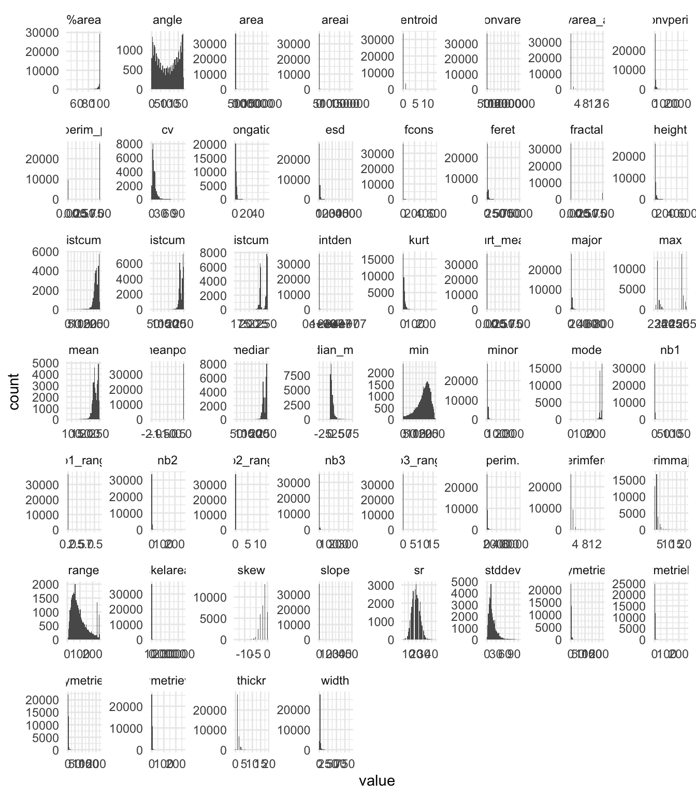
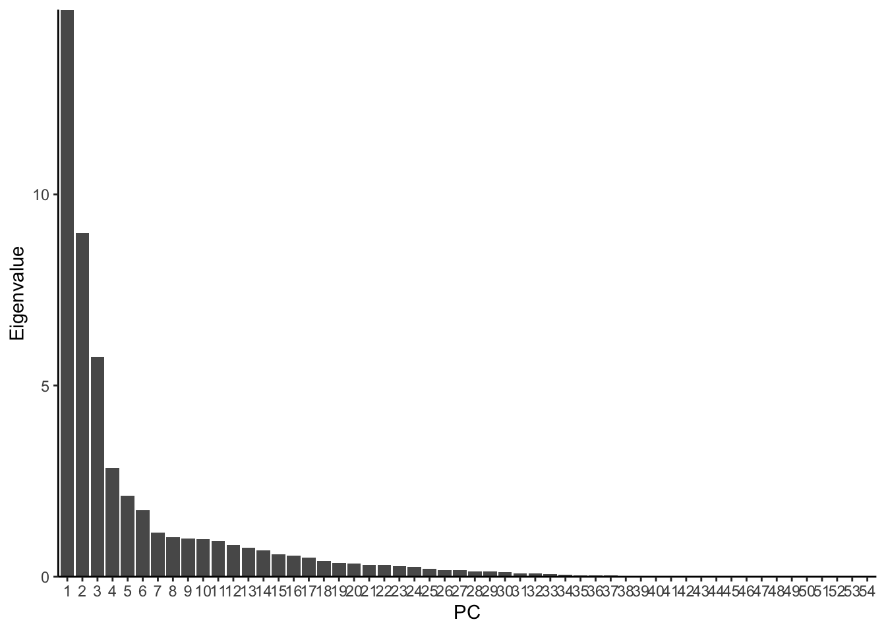
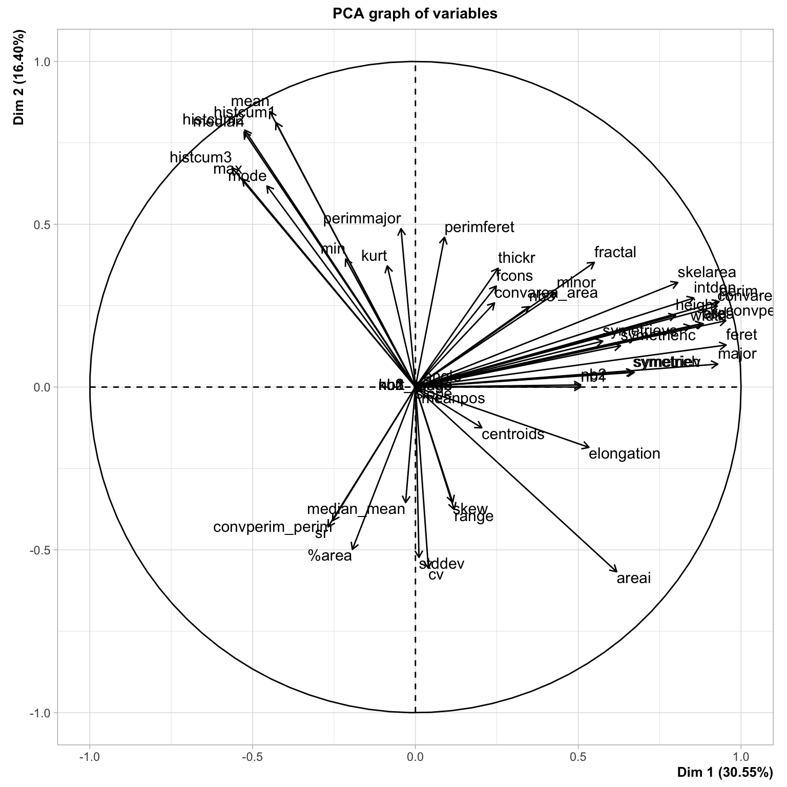
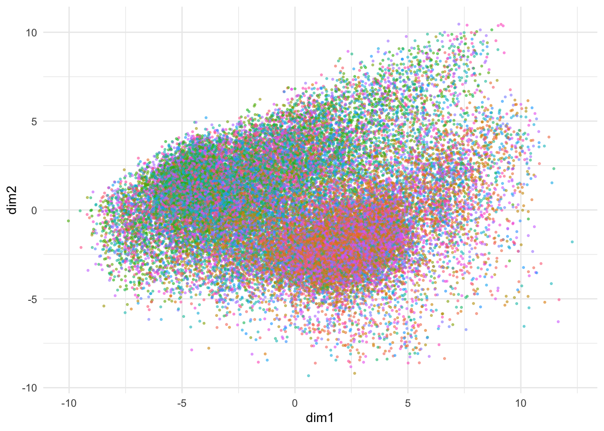
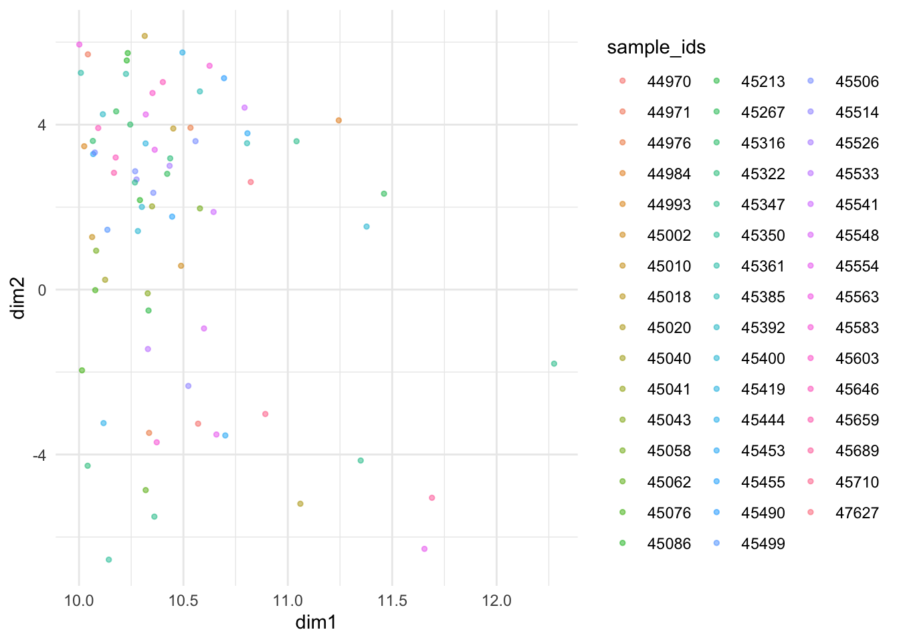
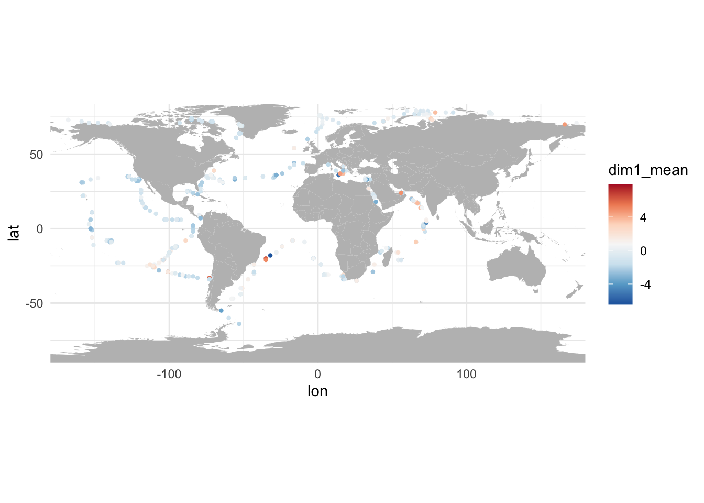
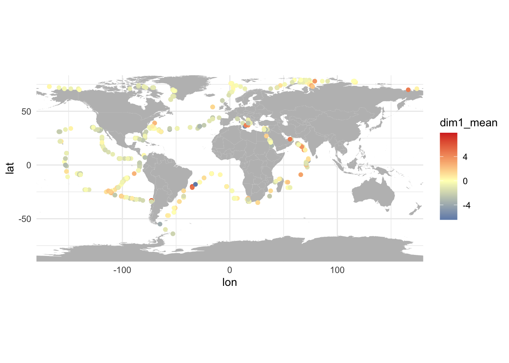
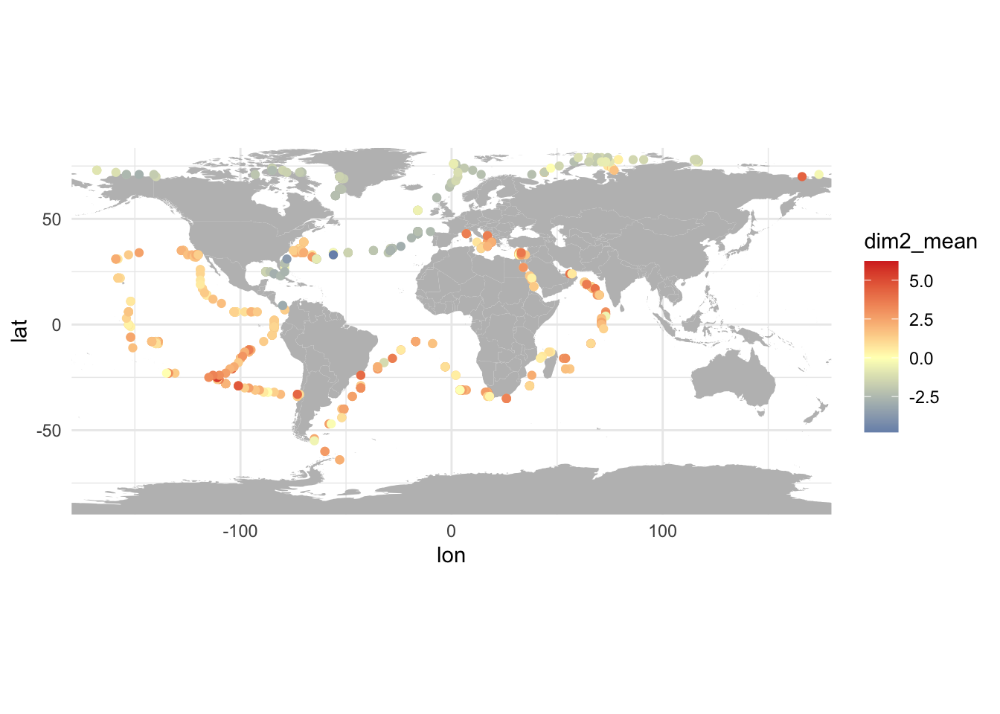
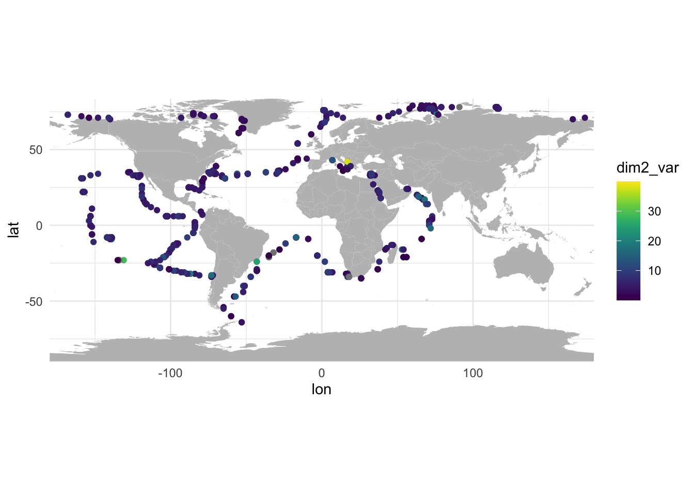

source("utils.R")Compute UVP diversity metrics
Read UVP data
load("data/02.all_uvp.Rdata")Clean data
Depth
Keep only organisms above the depth at which we want to predict poc export, i.e. 1000 m.
o <- o %>% filter(depth < max_depth_uvp)Taxa
List taxa, merge contextual observations with regular observations. Remove some unwanted taxa: tentacles of Cnidaria (only part of organisms, not representative of the overall morphology), Trichodesmium, Nostocales and Bacillariophyta (phytoplankton).
# List of taxa
taxa <- o %>% pull(taxon) %>% unique() %>% sort()
taxa [1] "Acantharea" "Actinopterygii"
[3] "Annelida" "Appendicularia"
[5] "Bacillariophyta (contextual)" "Cephalopoda"
[7] "Chaetognatha" "colonial Collodaria"
[9] "Copepoda" "Ctenophora"
[11] "Doliolida" "Eumalacostraca"
[13] "Foraminifera" "Gymnosomata"
[15] "Limacinidae" "Narcomedusae"
[17] "Nostocales" "Ostracoda"
[19] "other Cnidaria" "other Collodaria"
[21] "other Crustacea" "other Hydrozoa"
[23] "other Mollusca" "other Rhizaria"
[25] "Phaeodaria" "Pyrosoma"
[27] "Salpida" "Siphonophorae"
[29] "tentacle of Cnidaria" "Thecosomata"
[31] "Trachymedusae" "Trichodesmium"
[33] "Trichodesmium (contextual)" # Merge contextual
o <- o %>% mutate(taxon = str_remove_all(taxon, " \\(contextual\\)")) # NB need to use \\
# List unwanted taxa
unwanted <- c("Bacillariophyta", "Nostocales", "tentacle of Cnidaria", "Trichodesmium")
o <- o %>% filter(!taxon %in% unwanted)
# New list of taxa
taxa <- o %>% pull(taxon) %>% unique() %>% sort()
taxa [1] "Acantharea" "Actinopterygii" "Annelida"
[4] "Appendicularia" "Cephalopoda" "Chaetognatha"
[7] "colonial Collodaria" "Copepoda" "Ctenophora"
[10] "Doliolida" "Eumalacostraca" "Foraminifera"
[13] "Gymnosomata" "Limacinidae" "Narcomedusae"
[16] "Ostracoda" "other Cnidaria" "other Collodaria"
[19] "other Crustacea" "other Hydrozoa" "other Mollusca"
[22] "other Rhizaria" "Phaeodaria" "Pyrosoma"
[25] "Salpida" "Siphonophorae" "Thecosomata"
[28] "Trachymedusae" Profiles
Compute the number of objects per profile and keep only profiles that have more than 10 objects.
- TODO: minimum number of objects to keep a profile? Plot it!
profiles <- o %>%
group_by(profile_id, lon, lat, datetime) %>%
summarise(n_obj = n()) %>%
ungroup()`summarise()` has grouped output by 'profile_id', 'lon', 'lat'. You can
override using the `.groups` argument.profiles %>%
ggplot() +
geom_histogram(aes(x = n_obj), bins = 50) +
scale_x_continuous(limits = c(0, 50)) #+Warning: Removed 1775 rows containing non-finite values (`stat_bin()`).Warning: Removed 2 rows containing missing values (`geom_bar()`).
#scale_y_continuous(trans = "log1p")
#scale_y_log10()Not obvious, but the minimum number of objects per profile cannot be under 3.
profiles %>%
ggplot() +
geom_polygon(data = world, aes(x = lon, y = lat, group = group), fill = "gray") +
geom_point(aes(x = lon, y = lat, colour = n_obj > n_min_uvp), size = 0.5) +
scale_x_continuous(expand = c(0, 0)) + scale_y_continuous(expand = c(0, 0)) +
coord_quickmap()
# Keep only profiles with enough objects
profiles <- profiles %>% filter(n_obj > n_min_uvp) %>% select(-n_obj)
# Drop objects that do not belong to these profiles
o <- o %>% filter(profile_id %in% profiles$profile_id)We have 320927 objects belonging to 2876 profiles.
Taxonomic diversity
Compute taxonomic diversity indices:
Taxonomic richness
Shannon Diversity
Pielou Evenness
# Generate a contingency table as a matrix to feed to vegan
cont <- o %>%
count(profile_id, taxon) %>%
pivot_wider(names_from = "taxon", values_from = "n", values_fill = 0) %>%
as.data.frame() %>%
column_to_rownames(var = "profile_id") %>%
as.matrix()
# Compute diversity metrics
ta_div_prof <- tibble(
profile_id = rownames(cont),
ta_ric = specnumber(cont),
ta_div = diversity(cont, index = "shannon"),
ta_eve = ta_div/log(ta_ric)
) %>%
left_join(profiles, by = join_by(profile_id)) %>%
select(profile_id, lon, lat, everything())
# Store results with table of profiles
profiles <- profiles %>% left_join(ta_div_prof, by = join_by(profile_id, lon, lat, datetime))Plot taxonomic diversity metrics.
ggmap(
profiles,
"ta_ric",
type = "point"
)
ggmap(
profiles,
"ta_div",
type = "point"
)
ggmap(
profiles,
"ta_eve",
type = "point"
)
Trophic diversity
Morphological diversity
Based on:
Features
Some features are not meaningful for the morphology and thus should be removed. Other features have a unique value for all individuals and other are missing for many individuals. Let’s remove them.
# Select features
# NB this excludes ratio of features, e.g. kurt_mean which is kurt/mean
x <- o %>% select(area:circex)
# Remove variables with zero variance
feats <- x %>%
summarise_all(var, na.rm = TRUE) %>%
pivot_longer(cols = everything()) %>%
filter(value > 0) %>%
pull(name)
# Remove additional features that are relative to position within image
feats <- feats[!feats %in% c("angle", "tag", "centroids", "xmg5", "ymg5")]
x <- x %>% select(all_of(feats))Plot features distributions.
x %>%
pivot_longer(cols = everything()) %>%
ggplot() +
geom_histogram(aes(x = value), bins = 50) +
facet_wrap(~name, scales = "free")Warning: Removed 42756 rows containing non-finite values (`stat_bin()`).
For a PCA, features should be normally-distributed. Let’s apply some transformation to get closer to normal distribution:
mask extreme values
normalize using the Yeo-Johnson transformation
replace missing values by the mean of each column
x_norm <- x %>%
# remove the most extreme high values
mutate_all(mask_extreme, percent = c(0, 0.5)) %>%
# normalise using the Yeo-Johnson transformation
mutate_all(yeo_johnson) %>%
mutate_all(as.numeric)
# Replace NA by average of each column
for (col in names(x_norm)) {
x_norm[[col]][is.na(x_norm[[col]])] <- mean(x_norm[[col]], na.rm=TRUE)
}Plot “normalized” features.
x_norm %>%
pivot_longer(cols = everything()) %>%
ggplot() +
geom_histogram(aes(x = value), bins = 50) +
facet_wrap(~name, scales = "free")Warning: `position_stack()` requires non-overlapping x intervals
Morphospace
Build
Let’s feed the features to a PCA to build a morphospace.
# We need to use "scale.unit = TRUE" to center-scale all feature
m_space <- FactoMineR::PCA(x_norm, scale.unit = TRUE, graph = FALSE)Eigenvalues
Plot the eigenvalues.
eig <- m_space$eig %>%
as.data.frame() %>%
rownames_to_column(var = "comp") %>%
as_tibble() %>%
mutate(
comp = str_remove(comp, "comp "),
comp = as.numeric(comp),
comp = as.factor(comp)
) %>%
rename(var = `percentage of variance`, cum_var = `cumulative percentage of variance`)
eig %>%
ggplot() +
geom_col(aes(x = comp, y = eigenvalue)) +
geom_hline(yintercept = 1, col = "red", linewidth = 0.5) +
theme_classic() +
scale_y_continuous(expand = c(0, 0)) +
labs(x = "PC", y = "Eigenvalue") +
theme(axis.text.x = element_text(angle = 90, vjust = 0.5, hjust=1))
Most of the variance is captured by the first three axes (0.35, 0.19 and 0.097respectively).
Let’s plot this in log to have a better idea of PCs to select.
eig %>%
ggplot() +
geom_path(aes(x = as.numeric(comp), y = eigenvalue)) +
geom_point(aes(x = as.numeric(comp), y = eigenvalue)) +
geom_vline(xintercept = 5, colour = "red") +
theme_classic() +
scale_x_log10() +
scale_y_log10() +
labs(x = "PC", y = "Eigenvalue") +
theme(axis.text.x = element_text(angle = 90, vjust = 0.5, hjust=1))
It’s linear until ~5, let’s keep the first 5 PCs.
Features and axis definition
Let’s now plot the first two axes.
plot(m_space, choix="var", axes = c(1, 2))Warning: ggrepel: 12 unlabeled data points (too many overlaps). Consider
increasing max.overlaps
PC1: big objects in positive values, small objects in negative values.
PC2: clear (i.e. transparent) objects in positive values, dark (i.e. opaque) objects in negative values
As well as axes 3 and 4.
plot(m_space, choix="var", axes = c(3, 4))Warning: ggrepel: 20 unlabeled data points (too many overlaps). Consider
increasing max.overlaps
- PC3: elongated objects in positive values, round objects in negative values
- PC4: something with grey levels
Individuals
Let’s extract the coordinates of individuals in the morphospace.
## Get coordinates of individuals
inds <- m_space$ind$coord %>% as_tibble()
# Set nice names for columns
colnames(inds) <- str_c("m_dim", paste(c(1:ncol(inds))))
# And join with initial dataframe of objects
o <- o %>%
bind_cols(inds)We can not plot the position of objects in the morphospace, coloured per profile.
## Plot invidivuals with profile as colour
o %>%
ggplot(aes(x = m_dim1, y = m_dim2, colour = profile_id)) +
geom_point(show.legend = FALSE, size = 0.5, alpha = 0.05)
Tiling
Let’s now tile morphs within the morphological space.
# Folder containing images
img_dir <- "~/Documents/Data/UVP5/images/"
# Number of features to select
n_feat <- 12
# Generate path to image
o <- o %>% mutate(path_to_img = str_c(img_dir, profile_id, "/", object_id, ".jpg"), .before = object_id)
# Prepare a circle for the plot
circ <- circleFun(c(0, 0), 2, npoints = 500)
# Get variables contributions
#to select vars based on contribution to each plane
contribs <- as.data.frame(m_space$var$contrib) %>% as_tibble()
colnames(contribs) <- str_c("m_dim", paste(c(1:ncol(contribs))))
contribs <- contribs %>%
rownames_to_column(var = "feature") %>%
as_tibble() %>%
mutate(
m_dim_12 = abs(m_dim1) + abs(m_dim2),
m_dim_23 = abs(m_dim2) + abs(m_dim3),
m_dim_34 = abs(m_dim3) + abs(m_dim4)
)
# List variables with higher contribution for plane 1:2
var_contrib_12 <- contribs %>%
arrange(desc(m_dim_12)) %>%
slice(1:n_feat) %>%
pull(feature)
# and for plane 3:4
var_contrib_34 <- contribs %>%
arrange(desc(m_dim_34)) %>%
slice(1:n_feat) %>%
pull(feature)
# Get types of features
feat_types <- read_csv("data/raw/features_qual.csv", show_col_types = FALSE)
# Set colour per type of feature, using a named vector
feat_colours <- brewer_colors(length(unique(feat_types$type)), "Set2") # pick the appropriate number of colours
names(feat_colours) <- sort(unique(feat_types$type)) # add names to colours
#homogenize scaling between individuals & variables for correct biplot
# Change scaling of variables/columns from scaling 1 to 2
var_scores <- as.data.frame(t(t(m_space$var$coord) / sqrt(m_space$eig[,1]))) # de-scale
var_scores_2 <- as.data.frame(t(t(var_scores) * sqrt(nrow(var_scores) * m_space$eig[,1]))) # re-scale
# Rename columns
colnames(var_scores_2) <- str_c("m_dim", paste(c(1:ncol(var_scores_2))))
# Add feature names
var_scores_2 <- var_scores_2 %>%
rownames_to_column(var = "feature") %>%
as_tibble() %>%
# and types
left_join(feat_types, by = join_by(feature))
# Compute length of projection to scale circle
var_scores_2 <- var_scores_2 %>%
mutate(
len_12 = sqrt(m_dim1^2 + m_dim2^2),
len_34 = sqrt(m_dim3^2 + m_dim4^2),
)Objects in morphospace for axes 1:2
k <- max(var_scores_2$len_12) # adapt scaling of circle to fit the arrows
p12 <- ggmorph_tile(m_space, o$path_to_img, steps = 18, n_imgs = 3, fun = preprocess, dimensions = c(1,2), scale = 0.02)
p12 +
geom_path(data = circ, aes(x = x*k, y = y*k), lty = 2, color = "grey", alpha = 0.7) +
geom_hline(yintercept = 0, color="grey", alpha = 0.9) +
geom_vline(xintercept = 0, color="grey", alpha = 0.9) +
geom_segment(data = var_scores_2 %>% filter(feature %in% var_contrib_12), aes(x = 0, xend = m_dim1, y = 0, yend = m_dim2, colour = type), arrow = arrow(length = unit(0.025, "npc"), type = "open")) +
geom_text_repel(data = var_scores_2 %>% filter(feature %in% var_contrib_12), aes(x = m_dim1, y = m_dim2, label = feature, colour = type), show.legend = FALSE) +
scale_colour_manual(values = feat_colours) +
labs(colour = "Feature\ntype")
PC1 = size
PC2 = transparency
Objects in morphospace for axes 2:3
k <- max(var_scores_2$len_34) # adapt scaling of circle to fit the arrows
p34 <- ggmorph_tile(m_space, o$path_to_img, steps = 18, n_imgs = 3, fun = preprocess, dimensions = c(3,4), scale = 0.02)
p34 +
geom_path(data = circ, aes(x = x*k, y = y*k), lty = 2, color = "grey", alpha = 0.7) +
geom_hline(yintercept = 0, color="grey", alpha = 0.9) +
geom_vline(xintercept = 0, color="grey", alpha = 0.9) +
geom_segment(data = var_scores_2 %>% filter(feature %in% var_contrib_34), aes(x = 0, xend = m_dim3, y = 0, yend = m_dim4, colour = type), arrow = arrow(length = unit(0.025, "npc"), type = "open")) +
geom_text_repel(data = var_scores_2 %>% filter(feature %in% var_contrib_34), aes(x = m_dim3, y = m_dim4, label = feature, colour = type), show.legend = FALSE) +
scale_colour_manual(values = feat_colours) +
labs(colour = "Feature\ntype")
PC3 = elongation
PC4 = heterogeneity of grey levels
TODO: Look for missing files.
Diversity
Morphospace features
We can collect the position of objects in the morphospace to summarise the morphological diversity of each profile.
# Compute mean and variance of dim1, dim2, dim3 and dim4 per profile
m_div_prof <- o %>%
group_by(profile_id, lon, lat) %>%
summarise(across(m_dim1:m_dim4, list(mean = mean, var = var))) %>%
ungroup()`summarise()` has grouped output by 'profile_id', 'lon'. You can override using
the `.groups` argument.# And store this with profiles data
profiles <- profiles %>% left_join(m_div_prof, by = join_by(profile_id, lon, lat))And we can plot maps of mean dim1 and dim2 values for each profile.
ggmap(
profiles,
"m_dim1_mean",
type = "point",
palette = div_pal
) +
labs(colour = "PC1\nSize")
ggmap(
profiles,
"m_dim2_mean",
type = "point",
palette = div_pal
) +
labs(colour = "PC2\nTransparency")
ggmap(
profiles,
"m_dim3_mean",
type = "point",
palette = div_pal
) +
labs(colour = "PC3\nElongation")
ggmap(
profiles,
"m_dim4_mean",
type = "point",
palette = div_pal
) +
labs(colour = "PC4\nGrey hetero.")
We can also look at variance within profiles.
ggmap(
profiles,
"m_dim1_var",
type = "point"
) +
labs(colour = "PC1 var\nSize")
ggmap(
profiles,
"m_dim2_var",
type = "point"
) +
labs(colour = "PC2 var\nTransparency")
ggmap(
profiles,
"m_dim3_var",
type = "point"
) +
labs(colour = "PC3 var\nElongation")
ggmap(
profiles,
"m_dim4_var",
type = "point"
) +
labs(colour = "PC4 var\nGrey hetero.")
Metrics
Multivariate morphological diversity metrics have been defined in Beck et al. 2023 following the definition of multivariate functional diversity metrics in Villeger et al. 2008:
morphological richness
morphological evenness
morphological divergence
Computing these metrics require defining “morphs” (i.e. morphologically similar organisms) in the morphospace, i.e. using kmeans. These morphs are then used instead of species to compute morphological diversity metrics.
Define morphs
Define morphs using kmeans, in parallel.
TODO: Number of clusters. This depends on:
number of objects to cluster
number of profiles
number of retained morphospace axes
If we retain n morphospace axes, then we need at least n+1 morphs to be present in each profile (to compute a convex hull in n dimensions, we need n+1 points).
# Number of clusters
n_clust <- 200
# Perform clustering
morphs <- wkmeans::wkmeans(
x = o %>% select(contains("dim")), # use PCA outputs
k = n_clust, # number of clusters
nstart = 50, # number of random initialisations, higher is better
cores = n_cores
)
# Add cluster to table of objects
o <- o %>% mutate(
morph = morphs$cluster,
morph = str_pad(morph, width = nchar(n_clust), pad = "0"), # add leading zeros
morph = paste0("morph_", morph), # Add "morph_" in front
morph = as.factor(morph) # convert to factor
)Look at size of generated morphs (the red vertical line shows the expected mean).
morphs_size <- morphs$size %>%
as.data.frame() %>%
as_tibble() %>%
rename(morph = Var1, n = Freq)
summary(morphs_size) morph n
1 : 1 Min. : 716
2 : 1 1st Qu.:1346
3 : 1 Median :1536
4 : 1 Mean :1605
5 : 1 3rd Qu.:1842
6 : 1 Max. :2881
(Other):194 morphs_size %>%
ggplot() +
geom_histogram(aes(x = n), bins = n_clust/2) +
geom_vline(xintercept = nrow(o)/n_clust, colour = "red")
Relation between morph, taxa and profiles.
Number of individuals of each taxon per morph.
# Counts per morph and per taxa
counts_m_t <- o %>% select(morph, taxon) %>% count(morph, taxon)
counts_m_t %>%
ggplot() +
geom_boxplot(aes(x = taxon, y = n)) +
theme(axis.text.x = element_text(angle = 90, vjust = 0.5, hjust=1)) +
labs(y = "Number per morph") +
scale_y_continuous(trans = "log1p")
Look at number of taxa per morph.
# Counts per morph
counts_m <- counts_m_t %>% count(morph)
ggplot(counts_m) +
geom_histogram(aes(x = n, fill = morph), binwidth = 1, show.legend = FALSE) +
labs(x = "Number of taxa per morph") +
theme_classic()
# Each colour bloc represents a morph
counts_m %>% summary() morph n
morph_001: 1 Min. : 6.00
morph_002: 1 1st Qu.:14.00
morph_003: 1 Median :18.00
morph_004: 1 Mean :17.57
morph_005: 1 3rd Qu.:21.00
morph_006: 1 Max. :27.00
(Other) :194 The median of number of taxa per morph is 18: morphs are not representative of taxa.
In how many morphs is a taxa present?
# Counts per taxa
counts_t <- counts_m_t %>% count(taxon)
ggplot(counts_t) +
geom_col(aes(x = taxon, y = n)) +
labs(y = "Number of morphs in which taxon is present") +
coord_flip()
counts_t %>% summary() taxon n
Length:28 Min. : 37.00
Class :character 1st Qu.: 88.75
Mode :character Median :136.50
Mean :125.50
3rd Qu.:167.25
Max. :197.00 Gymnosomata and Cephalopoda are present in less than 50 morphs, while Copepoda are present in all of them.
Number of morphs per profile. This limits the number of dimensions we can use to compute metrics. We need at least n+1 morphs per profile with n the number of dimensions.
count_p_m <- o %>% count(profile_id, morph)
count_p <- count_p_m %>% count(profile_id) %>% arrange(n)
count_p %>%
ggplot() +
geom_histogram(aes(x = n, fill = n >= 6 ), bins = 50) +
geom_vline(xintercept = 6, colour = "red")
The red line shows the minimum number of morphs that must be present in each profile in order to compute morphological diversity metrics using 5 morphospace axes.
Plot clusters
o %>%
ggplot(aes(x = m_dim1, y = m_dim2, colour = morph)) +
geom_point(show.legend = FALSE, size = 0.5, alpha = 0.05)
Compute metrics
We need the following matrices:
traits values for each morph centre (morphs × traits)
morphs assemblages (profiles × morphs)
# Matrix of trait values for each morph, i.e. centers of morphs in mspace
# - rows = morphs
# - columns = traits
m_coord <- as_tibble(morphs$centers) %>%
mutate(
morph = row_number(),
morph = str_pad(morph, width = nchar(n_clust), pad = "0"),
morph = paste0("morph_", morph)
) %>%
column_to_rownames("morph") %>%
as.matrix()
# Matrix summarising morphs assemblages
# - rows = profiles (as row names)
# - columns = morphs
weights <- o %>%
# concentration per date per morph
group_by(profile_id, morph) %>%
summarise(n = n()) %>%
ungroup() %>%
arrange(morph) %>%
# convert to wide format and fill with 0s
pivot_wider(names_from = morph, values_from = n, values_fill = 0) %>%
column_to_rownames("profile_id") %>% # set profile_id as rowname
as.matrix()`summarise()` has grouped output by 'profile_id'. You can override using the
`.groups` argument.# Compute diversity metrics, which takes a looooooooong time
morpho_div <- alpha.fd.multidim(
sp_faxes_coord = m_coord,
asb_sp_w = weights,
ind_vect = c("feve", "fric", "fdiv"),
details_returned = FALSE,
verbose = FALSE
)Registered S3 method overwritten by 'dendextend':
method from
rev.hclust vegan# Clean result
morpho_div <- morpho_div$functional_diversity_indices %>%
rownames_to_column(var = "profile_id") %>%
as_tibble() %>%
select(profile_id, m_ric = fric, m_div = fdiv, m_eve = feve)
# And add to table of profiles
profiles <- profiles %>%
left_join(morpho_div, by = join_by(profile_id))Plot maps of resulting morphological diversity metrics
ggmap(profiles, var = "m_ric", type = "point")
ggmap(profiles, var = "m_div", type = "point")
ggmap(profiles, var = "m_eve", type = "point")
Save
save(profiles, file = "data/03.uvp_profiles.Rdata")